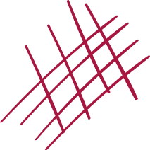

Рівні в правах
Історії про те, як регіональна мережа Уповноваженого Верховної Ради України з прав людини допомагає відновити права людини на місцевому рівні
Проєкт «Права людини для України», який виконується Програмою розвитку ООН в Україні та фінансується Міністерством закордонних справ Данії протягом 2019-2023 рр. продовжує підтримувати розвиток регіональної мережі офісу Уповноваженого Верховної Ради в Україні з прав людини. Регіональні представники та координатори із взаємодії з громадськістю Уповноваженого працюють в усіх областях України зі спеціальними представництвами у місті Лисичанськ по дотриманню прав людини у Донецькій та Луганській областях, та у місті Херсон – по Криму.
Думки, висновки чи рекомендації належать авторам та упорядникам цього видання і не обов’язково відображають погляди Міністерства закордонних справ Данії, Програми розвитку Організації Об’єднаних Націй чи інших агенцій ООН.
«Нікого не може бути піддано катуванню…»
Ця стаття 3 Конвенції про захист прав людини вкотре нагадує — будьмо людьми з людським обличчям. Не так давно відбувалися страшні злочини концтаборів ХХ століття, ми ще лиш збираємо свідчення про нелюдське поводження до полонених у підвалах так званих «ДНР» і «ЛНР». І тим сумніше чути, що в Україні до людини може застосовуватися покарання, яке принижує людську гідність. Нехай це стосується навіть засудженого до довічного ув’язнення…
Права по крихтах, або Як захищають себе люди із статусом ВПО
Уже сьомий рік, як Україна вирішує питання своїх громадян, що через конфлікт на Сході країни чи тимчасову окупацію Криму стали вимушеними переселенцями (далі – ВПО). Здавалося б, ми вже на всі гострі камені наштовхнулися й не повинно виникати труднощів з оформленням довідки переселенця чи нарахування законної пенсії. Однак безвідповідальність деяких держслужбовців спонукає українців знову і знову відстоювати свої права по крихтах.
Вперті
Ця історія розпочалася відтоді, як залили фундамент спортивного комплексу Sport Life у Чернівцях. Комітет доступності упродовж року писав листи з рекомендаціями, як організувати простір, щоб кожному відвідувачу чи відвідувачці там було доступно і зручно. Навіть якщо клієнти пересуваються на інвалідному візку. Обіцяли: все буде добре! А коли урочисто відкрили спорткомплекс, виявилося — про доступність для маломобільних чернівчан тут і не чули…

«Мамо, я хочу свою улюблену іграшку» — нехитрі мрії дітей з Донбасу
Повернути свою улюблену іграшку – про це мріє хлопчик з Луганська. Він хоче бачити свою бабусю. А ще не викидає футболку, з якої давно виріс, тому що вона… пахне домом.
Мама Іра, переселенка з Луганська, крізь сльози розповідає про мрії свого сина. Вони зараз живуть у Чернівцях, де не розриваються снаряди, де охайні будинки і люди безпечно у магазинах обирають подарунки своїм близьким. Вони не знать, що таке війна. А син бачив її на власні очі. І все одно він хоче повернутися в Луганськ, де небезпечно, але там – його рідний дім…
«Хочу вчитися», або Чому важливо поважати вибір дитини
…Вона невимушено стала біля стіни з намальованими крилами. Таке щире фото янгола для друзів у Фейсбук-стрічку. Її коротке пофарбоване волосся впало на обличчя, сховало і так ледь помітну усмішку. Юна, струнка, у рожевій курточці й рваних джинсах – одна з-поміж сотні тисяч українських підлітків. Звичайна дівчина, яка має свою історію дорослішання. Не в рідній родині.
Наразі за даними Мінсоцполітики на кінець 2019 року в Україні 69,2 тисяч дітей-сиріт та дітей, позбавлених батьківського піклування. Із них 49 714 дітей виховується під опікою, піклуванням і 14 056 дітей в прийомних прийомних сім’ях та дитячих будинках сімейного типу. Решта в інтернатних закладах.